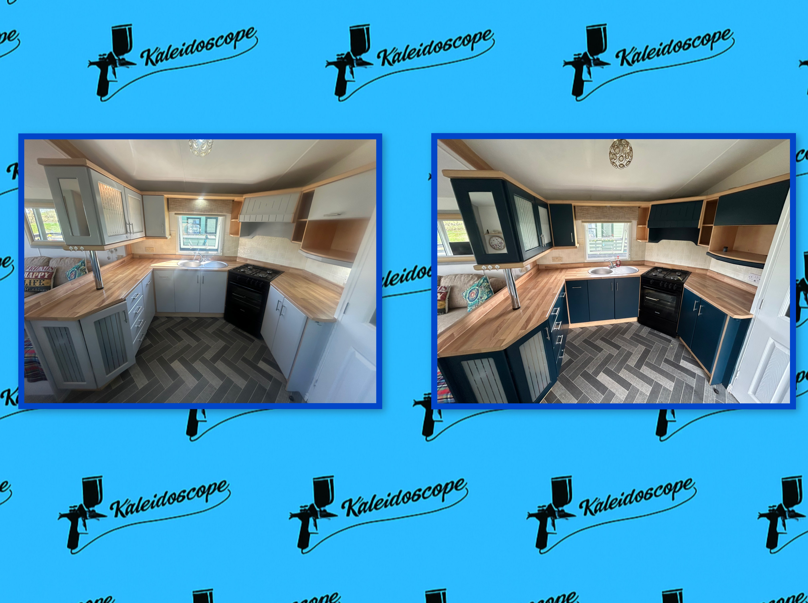
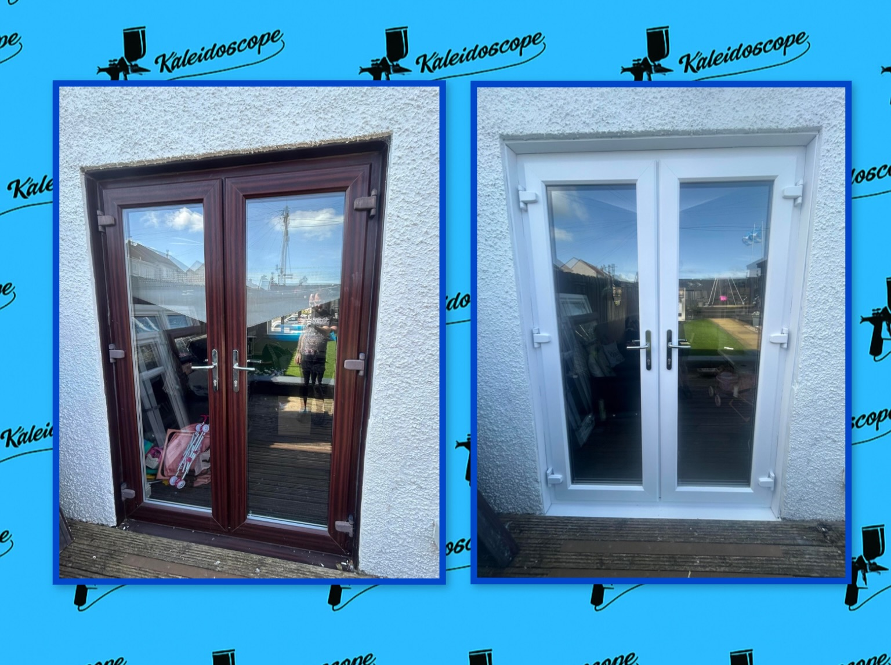
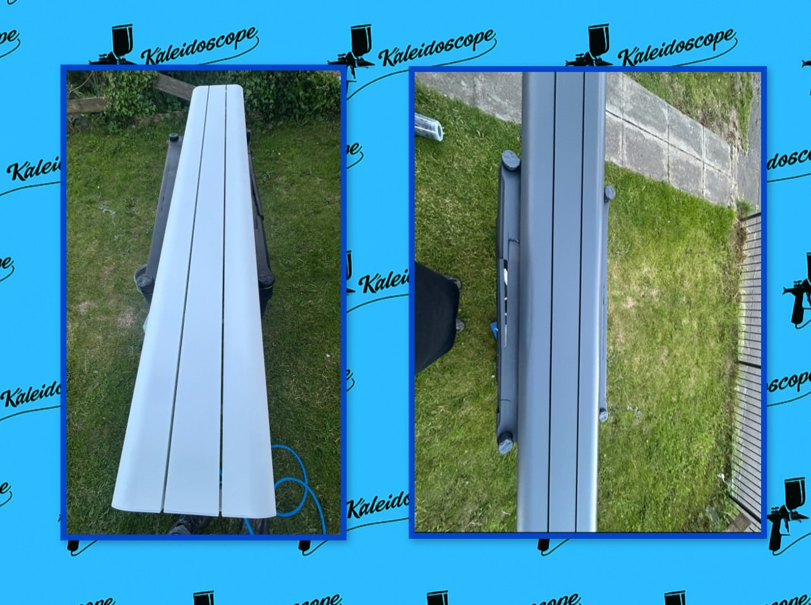

Our Services
High-quality resprays for kitchens, UPVC, and radiators — done with precision and care.

Kitchen Resprays
Give your kitchen a brand-new look with our respray service. We provide:
- Large range of colours to choose from
- Basic surface repairs included
- Full sanding and surface preparation for durability

UPVC Spraying
Revive your UPVC with professional spraying. Ideal for:
- Garage doors, patio doors, internal and external UPVC doors
- Finishes available in matte or satin
- Full colour range to match your home style

Radiator Resprays
Sprayed on-site for your convenience:
- Thorough cleaning and surface prep
- Durable, heat-resistant finishes
- Available in a range of stylish colours

Worktop Spray Painting (Spray Granite)
Upgrade your worktops with a stunning spray granite finish. Choose from:
- A wide range of base colours
- Unique granite flake blends to suit your style
- Sealed with ArmourGuard for strength and durability
This service delivers the look and feel of natural stone — without the cost of replacement.